Призменный маяк
Полная визуальная линейка: основание, 15 улучшений, шесть финальных кросс-сочетаний. Неигровая галерея для проверки ассетов.
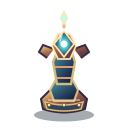
Кристаллическая оптика, тёплая медь и холодное свечение. 128 × 128 SVG. Все ступени представлены самостоятельными полноразмерными иллюстрациями, а вторичные ветки добавляются отдельным слоем.
Белое солнце
Одиночный фокус
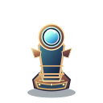
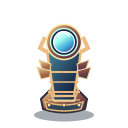
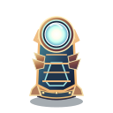
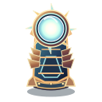
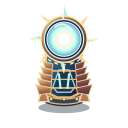
Спектр
Разветвление лучей
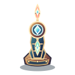
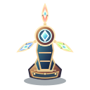
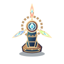
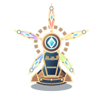
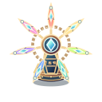
Оптический суд
Разметка и усиление
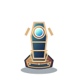
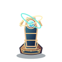
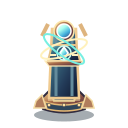
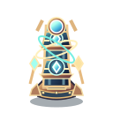
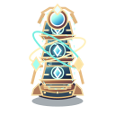
Финальные кросс-пути
Основной T5 всегда задаёт силуэт, вторичная T2 видна поверх него.
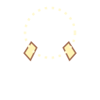
Вторичные оптические накладки
Шесть самостоятельных прозрачных SVG. Накладываются поверх основного силуэта без замены полной модели.
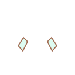
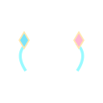
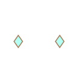